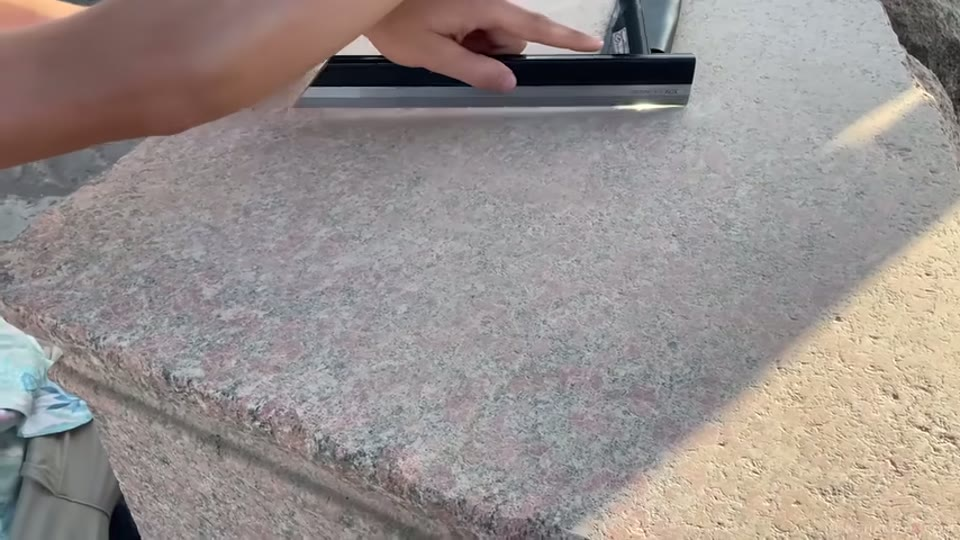
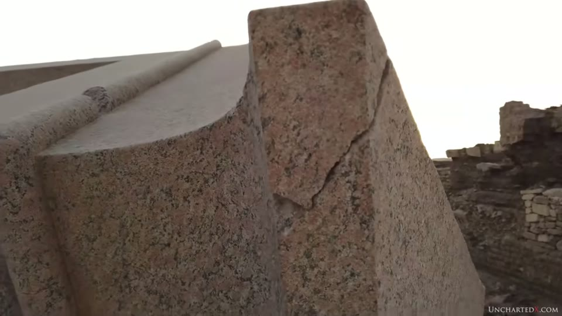
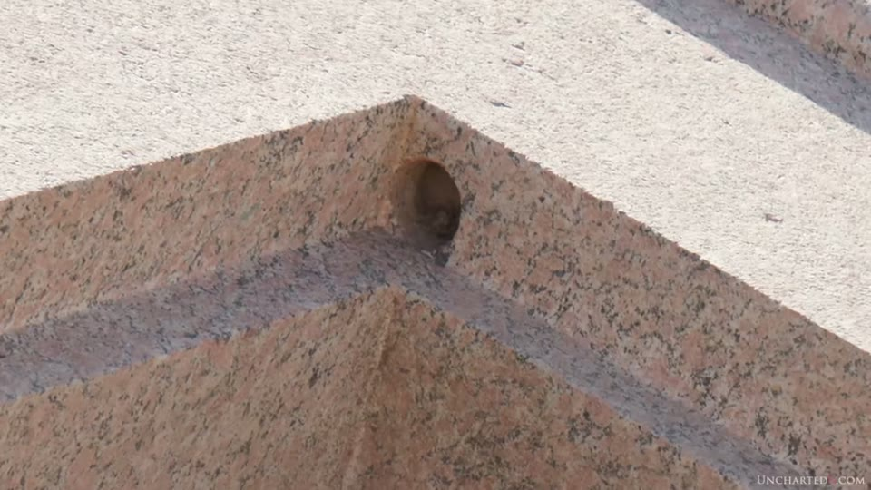
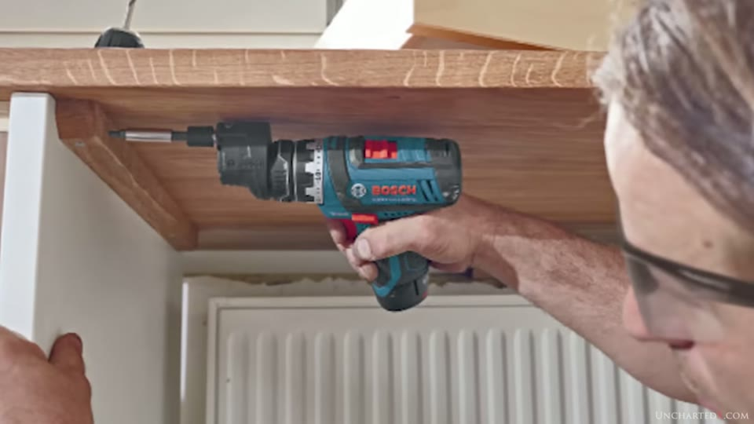
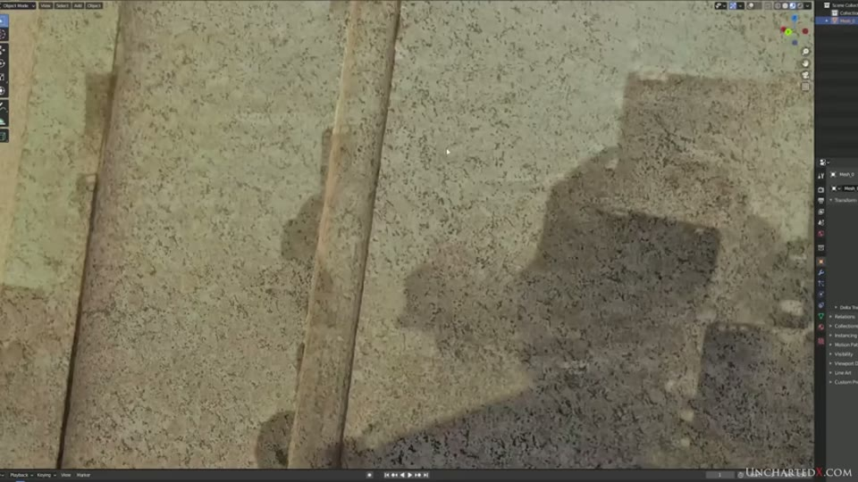
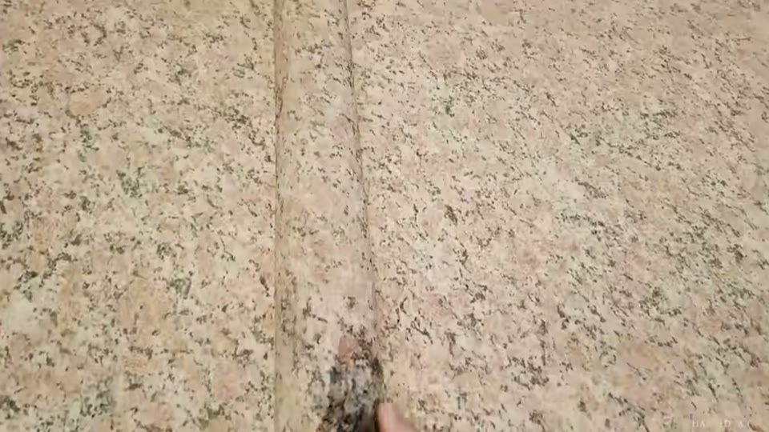
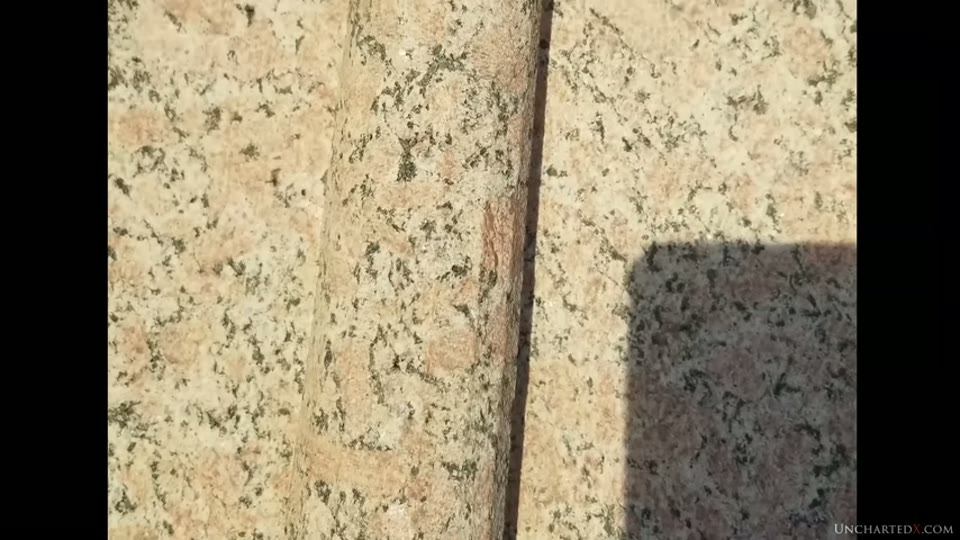
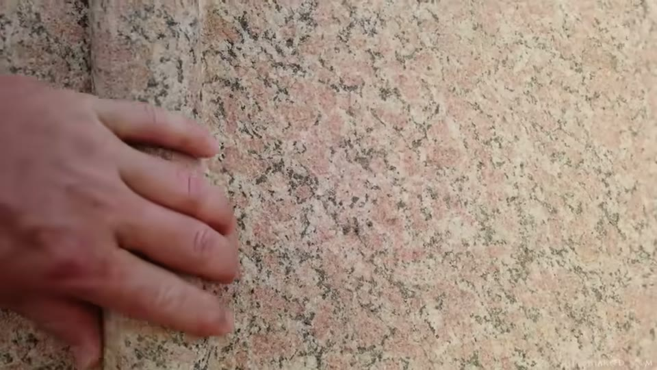
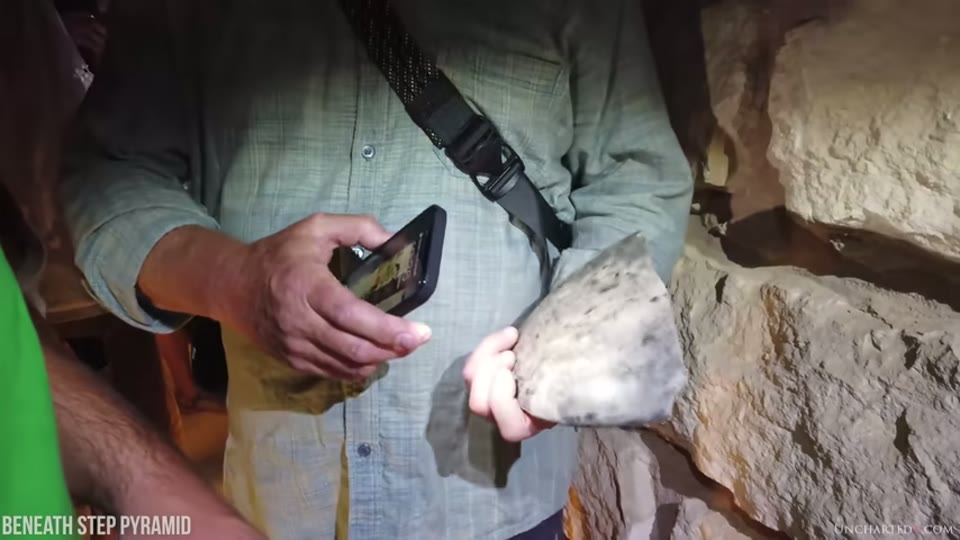

UnchartedX
Smoking Gun Evidence for Ancient Granite Machining! Elephantine Island
Ben · 29 min · watch on YouTube · summarised 2026-09-30
The narrowest video in this group and, on the presenter's own account, one of the strongest things he has 00:10–00:43. It is about a single feature on a single object: a section of moulding on a granite box at Elephantine Island that was left unfinished.
The opening frame is two-industries and unfinished rather than scale. He states the case as a cumulative one 01:04–03:12 — machining marks, precision, the Younger Dryas impact, genetic bottlenecks, Göbekli Tepe and Karahan Tepe — and then says that this video is one small piece of it. The Göbekli excavations are held as the Göbekli Tepe entry.
He notes that the box in question is the one in the thumbnail of the machining entry, the first video in the same series.
The island, and what else is on it
03:12–06:30. Elephantine sits in the Nile beside Aswan, just north of the 1902 British-built low dam and six kilometres downstream of the 1960s High Dam. He draws one consequence of the High Dam that is not about this object: without the annual inundation and the nine-month dry season, the water table in Egypt has been rising, and that is reaching the underground parts of sites — he names Hawara, where the labyrinth was relocated in recent years and now sits below the water table. The channel has a video devoted to that site and to the survey that located it, with the salt damage filmed inside the pyramid's descending passage: the Hawara labyrinth entry.
On the island itself: occupation back into the Old Kingdom and pre-dynastic times; the remnants of a small Old Kingdom pyramid, usually off limits; and the Satet temple, whose archaeological record shows at least seven rebuildings from around 2800 BCE to the Ptolemaic period. He credits **Graham Hancock's *The Sign and the Seal*** for the claim that the Ark of the Covenant was kept here for a time.
One instrument is used on camera, which is unusual for this channel 06:10–06:30. On a block with a rough, unpolished but very flat top he lays a precision straightedge and does a light test against it.

That a rough, unpolished block on the island is nonetheless very flat.
The box
06:30–09:10. A single-piece granite box lying on its side in what he calls the granite graveyard at the centre of the island. Egyptologists describe it as a shrine or an altar rather than a sarcophagus, which he notes as a departure from the usual labelling.
Its features as he lists them: a pointed, pyramid-like top ending in a small flat space he speculates once carried a benben-like stone; an interior that is not fully hollowed out but carries inset edges and a large internal step or platform; and 90-degree corners with very small internal radii.

The object the video is about.
The tube drill holes are the first argument 07:26–09:10. At the top and bottom of the inset edge running round the box are large-diameter tube drill holes, which he guesses may be pivot points for doors while saying the function is unknown. The point he draws from them is about access rather than about hardness:
"Note that the holes themselves are flush against two axes of the inset edge… there is just no room for the mechanism that turns the bits or the cutter. In modern examples the drill or the tool itself is always much wider and larger than the bit that's doing the cutting."
And the same objection applied to the mainstream method: there is no room either for a copper tube and bow-drill apparatus, "not that any copper tubes of this type have ever been found." What he says is needed is an offset bit or something else that solves the clearance problem — the same class of object as the offset-bored core that the tube drills addendum ends on. The tube-drill case itself is the tube drills entry.

That the drill holes sit flush into an internal corner, leaving no room for a tool body.
The illustration for the clearance problem is stock footage of a man driving a screw into a wooden shelf with a cordless drill.

What illustrates the clearance problem.
How many of these there are, and what happened to them
09:58–14:20. Not a unique object. Behind the granite one is the interior remnant of a second box in what he takes to be black granite, and on its inside surface is a red ochre outline painted by a priest in Ptolemaic times, marking where they intended to quarry the surface for reuse — an attempt that failed when the rock split, leaving both the outline and the object. A short distance away, on what seems to be another piece of the same box, is the clear outline for a millstone.
He also records a piece of evidence lost and then recovered. A fragment he filmed in 2020 showed the join between the moulding that ran round the box and the thicker piece that ran down the sides; he could not find it again in 2021 or 2022. The video was then re-edited mid-production 11:29–12:28: on a November 2022 trip they located it, turned over and half-buried in sand, examined it and scanned it with photogrammetry. A second, longer fragment of moulding was found with it. From the pieces he concludes there were at least three of these shrines on the island — one rose granite and two in granodiorite or syenite.

That the recovered fragment was scanned.
A fourth is at Edfu 12:41–14:20, standing upright in the sanctuary of the temple of Horus, with the same pyramid-like top, internal shelf, inset edges, tube drill holes and moulding. Two differences: it is more polished, which he attributes to handling over thousands of years, and it carries glyphs and decoration, which none of the others do. From that, and from the Ptolemaic paint on the Elephantine box, he argues the Edfu box is "likely an item whose origins are far more ancient than the Edfu temple itself" — moved, renovated and reused. He adds that the footage is from 2020 when the country had almost no tourists, and that the area is now closed and the box's view blocked by a replica solar boat.
The feature the video exists for
14:21–18:25. On one side, for roughly half the length of the moulding that runs round the top of the box, the work stops short of finished. Instead of a smooth semicircular section it is faceted — a series of flat surfaces separated by long straight lines, outlining the rough semicircle. Halfway along, the transition from faceted to polished is visible in one view.


That half of one moulding was left roughed out, in flat facets with straight boundaries.

What the same moulding looks like where it was finished.
His argument from it has three steps and is short:
1. The faceting is not the intended finish. It is the roughing-out stage of a form that elsewhere on the same box is smooth and round, so it is "purely the signature of the tool that did the shaping." 2. There are no hand-tool marks on it. "There are no pounding marks of bruised stone, nor any chisel marks on this part of the edging." 3. The lines are too straight and too long. "If it were done by hand you certainly wouldn't have had these remarkably straight lines and precise facets that run down a metre or more of the edging." Working by hand, he says, the shaping would be rougher and the concern would be not to remove too much before finishing.
What he infers is a tool with a tip wide enough to cut a flat facet, rotating or otherwise cutting the granite readily, and guided precisely — "one might even say mechanically". He marks his own speculation as speculation: it could have been something that made several facets in a single pass, "who really knows."
Then the fork 18:25–20:18, which is the same one the series keeps returning to: either the dynastic Egyptians had far more sophisticated tools than we have found, or they did not make this object. And an observation about the asymmetry of the record: "we only have evidence from the Egyptians themselves for the primitive one of these two industries… The dynastic Egyptians say nothing about the more advanced industry."
The same moulding elsewhere
20:19–22:58. He points to the flared palm and lotus columns as carrying a similar moulding — the Bubastis column over a thousand miles north, which he calls the best preserved he has seen, and more than a dozen at Tanis, "almost like they were stamped out in a factory." Those columns are the subject of the precision entry.
One new detail he adds about them: centred holes in both the tops and the bottoms of the columns, which he offers as "pure speculation" about something like a vertical lathe having been involved in the initial shaping. And he notes that the same features appear on Old Kingdom sites — Saqqara, Abusir — not only New Kingdom ones.
The expert opinion, and how it is presented
22:58–25:18. Ben states his own limits first: "I make no claim as to being an expert stone worker. Academically I studied the industry, its history, tools and techniques, but I certainly don't have any experience in this field myself."
The expert is Alma Allen, introduced not on camera but through a screenshot of his gallery page, which gives his biography — born Heber City, Utah, 1970; lives and works in Tepoztlán, Mexico — and shows his sculpture. Ben's account of him: more than thirty years working hard stone, expert in hand chisels and in machine tools, and now working in robotic CNC after developing severe carpal tunnel.


Who the expert is, and how he is introduced.
The verdict is reported rather than quoted. Allen appears in the footage, and the audio of him speaking is present but is not recoverable from the caption track at the point where it matters. What the video gives is Ben's summary:
"When it came to the faceted section… he was very clear: this is one hundred percent the result of some form of precisely guided mechanical tool, and not that of a primitive handheld chisel."
Ben then says he holds that opinion "in far greater esteem than that of any Egyptologist without hands-on experience."
The closing ask is preservation 25:18–26:00: that the box be protected and examined more closely, and a worry that it may instead "disappear or become hidden and restricted behind barriers or ropes, as seems to have been the fate in recent years for many other similar bits of evidence."
What you can check yourself
- The object is in the open air on Elephantine Island, lying on its side, and the faceted section is visible and photographable from several angles.
- The transition point between faceted and finished moulding is a single thing to look for, and it does not need instruments.
- The other three. The second and third boxes' fragments are in the same area, and the fourth is at Edfu — though he says that part of the temple is now closed and the view blocked.
- The Ptolemaic quarrying outline and the millstone outline are painted and incised on stone that is still there.
- The tube drill holes in the inset corners can be photographed against the two faces they sit flush with, which is the whole of that argument.
- The Satet temple's rebuilding sequence is published archaeology — at least seven phases from around 2800 BCE.
- Alma Allen's background is a matter of public record; his gallery page is shown with the URL and biography legible.
- The columns at Bubastis and Tanis, and the centred holes in their ends, are accessible and countable.
What the video does not settle
- The faceting is interpreted, not analysed. No measurement of a facet, no angle, no width, no count and no scale appears. The claim that the straight lines run "a metre or more" is stated, not shown against a rule.
- The absence of tool marks is asserted from looking. No magnification, raking light or cast is used to establish that there are no pounding or chisel marks on the faceted section.
- The expert's verdict is relayed by the presenter. Alma Allen is on the trip and in the footage; the sentence that carries the video is Ben's report of what Allen said, not Allen saying it on camera in a form the video presents as a quotation.
- The photogrammetry scan is shown, not used. The model of the recovered fragment appears in a 3D application; no dimension, tolerance or surface deviation is derived from it on screen.
- The straightedge test is shown without its result. The instrument is in frame on the flat block, but whether light passed under it is not resolvable in the footage, and no figure is given.
- The clearance argument is made with a modern analogy. What illustrates it is stock footage of a cordless drill on a wooden shelf; no ancient tool, reconstruction or attempt at the cut is offered.
- Nothing is dated. The box is not assigned a date, the Satet temple sequence is not tied to it, and the argument for inheritance rests entirely on relative capability.
- The count of three shrines is his estimate from fragments, and he says so — "without more sophisticated investigation we'll never really know."
- The vertical lathe is offered as speculation and is labelled as such.
Names and terms heard rather than read
A 2022 upload, so the caption track is better than the older ones. Seven reconstructions:
| written here | as the captions give it |
|---|---|
| Yousef Awyan | "Yusuf Awan" |
| Graham Hancock | "Graeme Hancock" |
| Satet temple | "the satet temple" (given) |
| Bubastis, temple of Bastet | "bastet Temple" |
| Tanis | "Tannis", "tennis" |
| Abusir | "abusia" |
| Karahan Tepe | "karahan Tepe" (given) |
| syenite | "cyanide" |
Two things were read off the screen rather than reconstructed. Alma Allen's name, birth year and where he lives and works come from the gallery page shown in the frame. And the photogrammetry model is displayed inside a 3D modelling application whose interface is visible, which is how the scan is identified as a mesh rather than a photograph.
One passage of speech is not recoverable. At 24:35–24:50 the caption track gives "I shall say we had a I spent many years on a lead yeah" and then jumps to Ben's summary. What Alma Allen actually says on camera at that moment has not been recovered, and the entry records the verdict as Ben reports it rather than as a quotation from Allen.